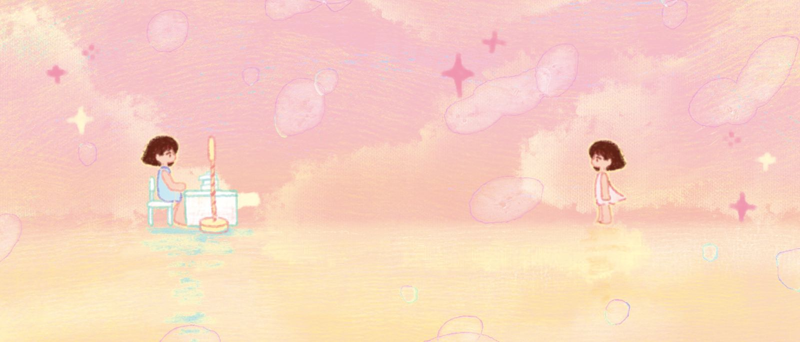
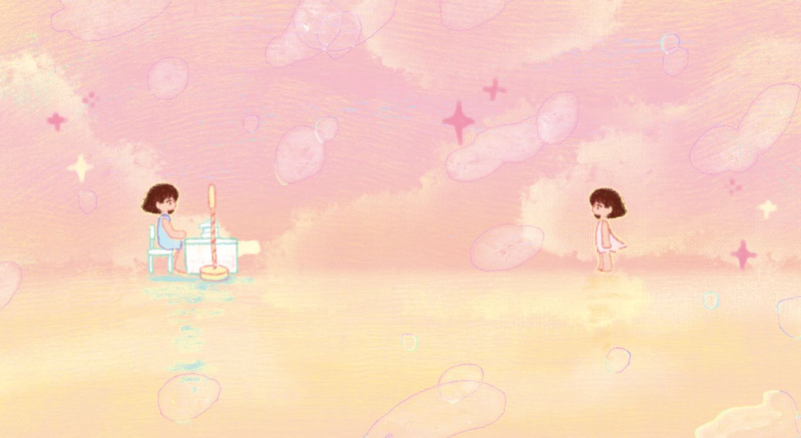
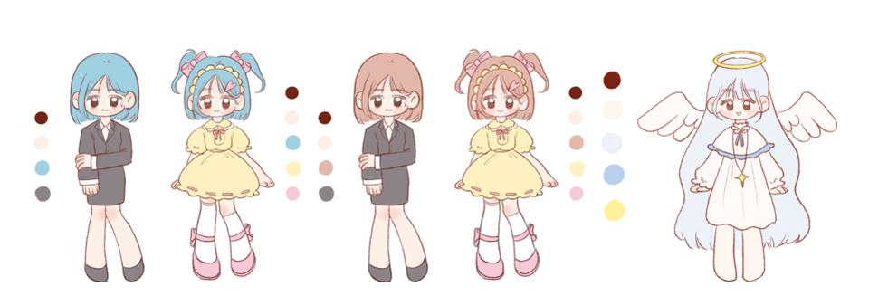
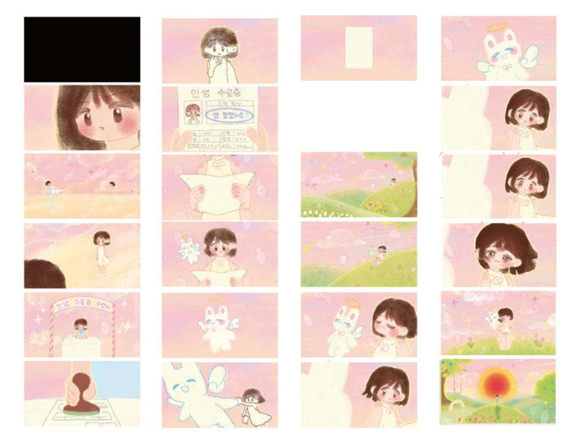
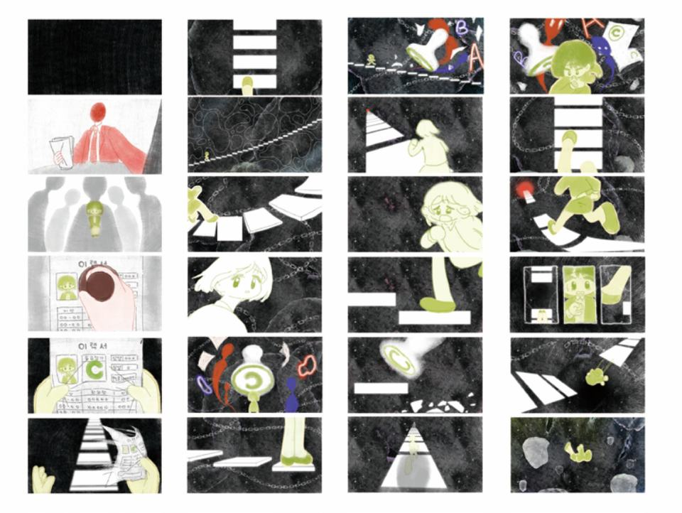
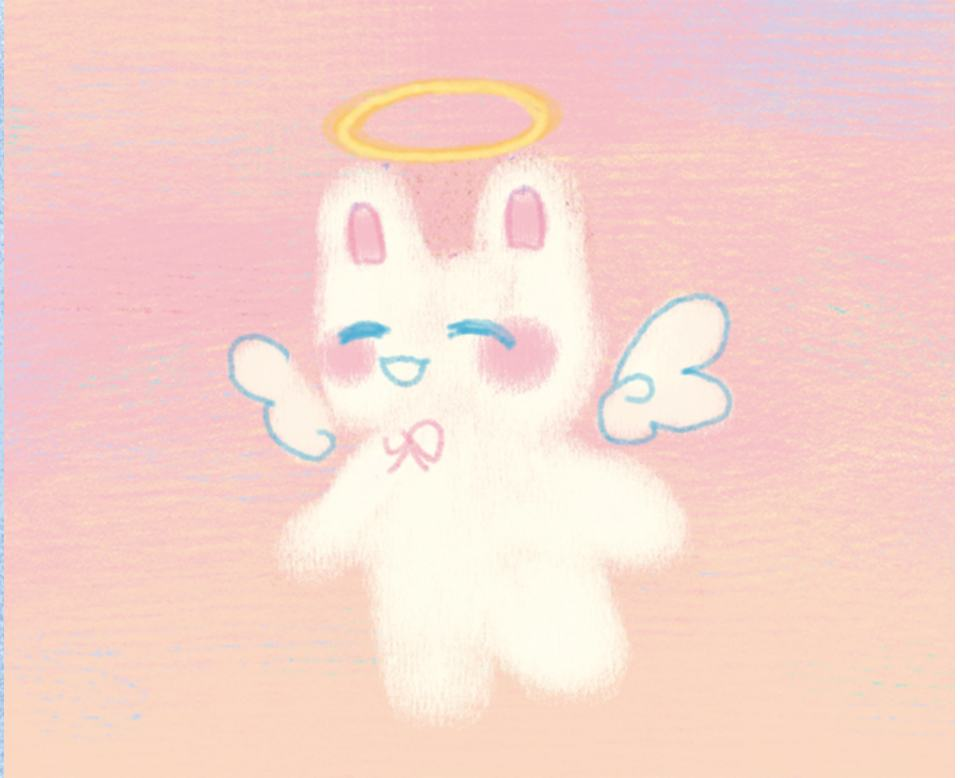
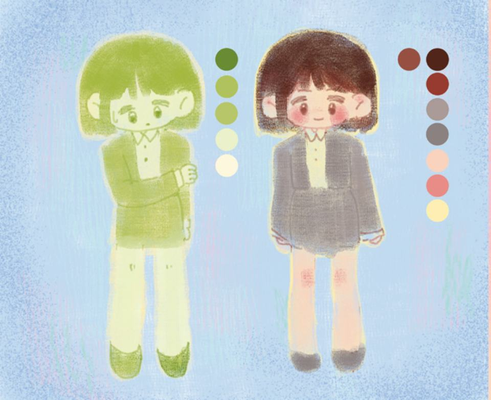

작품 스타일은 전체적으로 2D 그림체로 그렸다. 이런 질감의 그림체는 전반부의 곤경 속 고통과 후반부의 여유로움을 잘 표현할 수 있다. 전반부 화면은 흑백 위주로 곤경에 처한 소녀의 고통과 몸부림을 강조했고, 후반부 화면은 핑크그린 등 따뜻한 색상으로 주를 이뤘다. 극명한 대비와 반대가 이뤄져, 더욱 직관적으로 시청자들에게 차이를 느끼게 할 수 있고, 힐링도 느끼게 한다.
The general art style of this work is a 2D drawing style. This texture of painting can express the pain in the first half and the ease of the second half well. The first half of the screen emphasizes the pain and struggle of a girl in trouble, mainly in black and white. The second half of the screen is dominated by warm colors such as pink and green. There is a stark contrast and opposition, making viewers feel the difference more intuitively. Growing Up / Healing
- 학생
- 호의야
- 분야
- 애니메이션
- 형식
- 2D 애니메이션
- 러닝타임
- 02:34
- 장르
- 성장, 힐링
- 화면비
- 16:9
- 전시
- 2023 졸업작품전 「The Wonder Garden」
시놉시스
모든 것을 등급이 결정하는 사회 제도 하에서 소녀는 구직했을 때 또 C등급의 평가를 받았다. 등급을 매기는 도장은 계속 소녀를 압박한다. 소녀는 결국 포기하고 나락으로 뛰어내렸다. 소녀가 깨어났을 때 인생 수료증에 받은 평가는 C등급이 아니였다. 천사가 소녀에게 '인생 끝지점에서 A 도장을 찍어주는 사람은 없어요. 다 '참 잘했어요' 도장을 찍어주는 거예요.' 라고 전달한다. 소녀는 마음을 풀었다.
Under a social system in which everything is determined by grade, the girl was rated C again while looking for a job. The grading stamp keeps pressing the girl. The girl eventually gave up and jumped into the abyss. When the girl woke up, the evaluation she received on her life certificate was not C grade. The angel said to the girl, 'No one gives an A stamp at the end of life. They all gave me a stamp saying, "You did a great job."' That's what it says. The girl warmed up.
기획 의도
효율성을 추구하는 사회 환경에서 많은 젊은 사람들이 이런 불안과 스트레스를 가지고 있다. 그래서 힐링을 줄 수 있는 애니를 만들고 싶다. 곤경에서 허덕이는 사람들에게 '뒤처지는 게 진짜 뒤처진 게 아니고, 앞서나가는 게 진짜 앞서가는 것도 아니다. 남들과 비교하지 말고 스스로 최선을 다하면서 본인과의 경주에서 이기고 행복을 얻을 수 있으면 된다.' 라는 말을 전달하고 싶다.
Many young people have this anxiety and stress in an efficiency-seeking social environment. So I want to make an animation that can give me healing. To those struggling in distress, "Getting behind isn't really behind, and getting ahead isn't really getting ahead. Don't compare yourself to others, but do your best and win the race with yourself and get happiness". I want to convey that.
스틸





